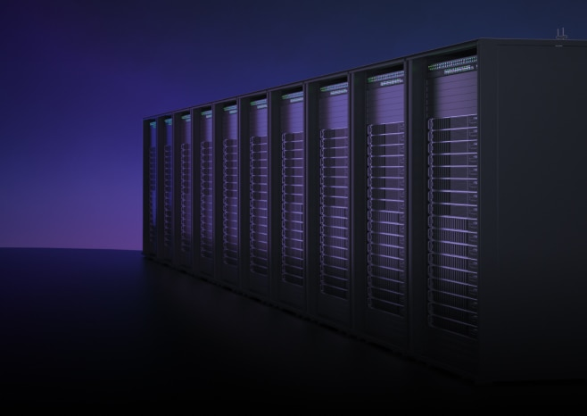

Products · Cloud compute
Arm Neoverse N2
The Neoverse N2 platform delivers scalable, energy-efficient compute for cloud-native and AI-centric data centers — from orchestration head nodes to high-density inference clusters.
Built on Armv9 architecture, Neoverse N2 improves performance per watt for sustained AI workloads while maintaining compatibility with the cloud software ecosystem your teams already run.
Hyperscalers use Neoverse to coordinate GPUs and custom accelerators, manage memory bandwidth, and maintain control-plane services as agentic AI expands rack-level coordination tasks.

128
Neoverse N2 cores per socket (platform config)
2×
Performance uplift vs prior generation for cloud AI orchestration
40%
Typical power efficiency gain for sustained inference clusters
Where Neoverse N2 fits in AI infrastructure
- Head-node orchestration — coordinate accelerators, pre/post-processing, and agent control loops.
- Cloud-native services — scale microservices and data pipelines with Armv9 security extensions.
- High-density inference — run persistent inference alongside networking and storage services on the same platform.
Evaluate Neoverse for your Cloud AI roadmap
Request a technical briefing or explore migration resources on Arm Developer.